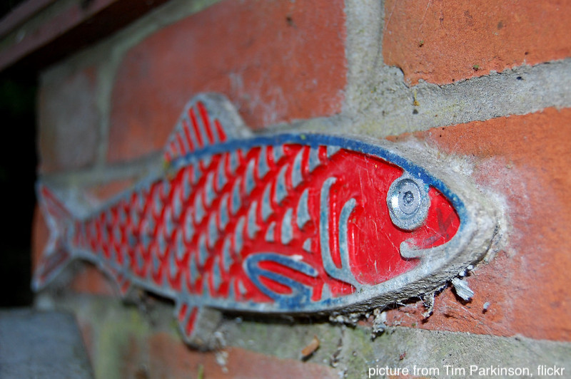
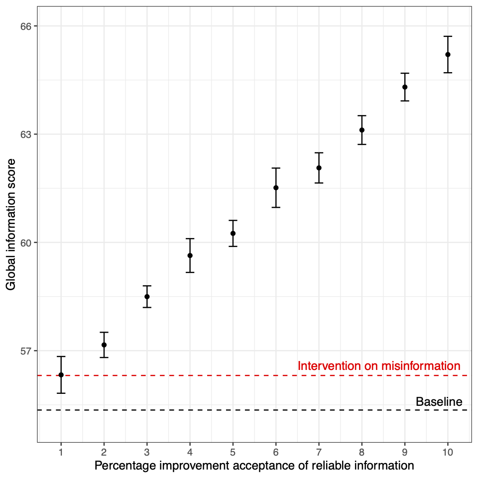

Fake news spreading on social media is often considered the cause of all bad things happened in the last years. From Brexit to the election of Trump, and later to covid anti-vaxx sentiments, examples are not lacking. Of course, “bad” depends on your point of view, but also vaccines and lockdown support have been considered a product of mass formation psychosis.
I am long-time sceptical of this line of reasoning. From a cognitive and evolutionary perspective on cultural transmission, it makes sense to think to humans not as overly gullible individuals, but as wary social learners, that use relatively sophisticated strategies to decide whether to accept social information or not. In fact, recent empirical studies show that apparently we do not use social information enough, even when it would be advantageous. You can replace to the stereotype of gullible individuals the one of stubborn agents: the problem seems to be not that we are too easy to influence, but that we do not change our mind when we should.
It could be, naturally, that the situation brought about with the diffusion of social media is so different from offline dynamics that we just cannot cope. This is a legitimate question. However, the broad picture painted by recent research seems to be consistent: fake news rarely changes our minds. We interact with online misinformation because is fun or engrossing, to keep in contact with others, to actually debunk it, or because we are already on the same page, and we want to signal our political or group membership. But there is more: when considered together with all the information present on social media, the proportion of fake or deceptive news is often negligible. Depending on the criteria used, the proportion of unreliable news online is generally estimated in single digit percentages, with at worst being around 5% of the total proportion of information (see table 1 here for various estimates).
Starting from this finding, together with Sacha Altay and Hugo Mercier, we recently published a paper that considers how much effort is worth allocating to fight online misinformation. Assume that people believe only some of the reliable news they encounter and only some of the unreliable news. Given the relative paucity of online misinformation, efforts to increase belief in reliable information will have a bigger effect than contrary efforts to decrease belief in unreliable information. To test this intuition (Hugo’s intuition…), we developed a simple model. The figure below illustrates the main result. We started by devising a measure of the total amount of “truth” in the system (“Global information score”, on the y-axis in the figure). Think about the “Global information score” as an index that is maximum (100) when all and only reliable information is trusted, and minimum when only and all unreliable information is (-100). Given a 5% of proportion of unreliable information, if we completely wipe out belief in unreliable information, the Global information score increases of one or two points (in the figure, the difference between the “Baseline” and the “Intervention on misinformation” line). If, instead, we leave the belief in misinformation as it is, and we increase of single percentage points the belief in reliable information, we have a bigger effect.

This outcome is robust to various realistic estimates of the relative proportion of reliable/unreliable information, to various baseline tendencies to believe reliable/unreliable information, and, as we explore in the model, works when the exposure to news is unequally distributed as in reality (with very few people consuming a lot of pieces of news, and the majority a few), when acceptance of misinformation decreases trust in reliable information, and when acceptance of misinformation increases the supply of misinformation (see again the paper for details). Of course, the model is bare-bones, but I hope it can be extended to include more realistic characteristics (for example, various typologies of news effects, going beyond reliable versus unreliable news) and to support real policy efforts - which is, well, why we made it in first place…
And, yes, the title of this post is provocative, but it makes an important point. As we write in the paper, it is possible that the relative low proportion of fake news that we observe is indeed due to the efforts that are made to control it. But I do think that the academic and societal attention to “fake news”, “infodemic”, and the like, is disproportionate. Focusing on reliable news on social media, on their engagement potential, on counteracting the decrease of trust in reliable sources, could be more important that fighting a dubious enemy.
Assuming that our opponents are motivated by false beliefs (of course, it is the others that fall for fake news!), beside being probably wrong, is also a way to refuse to understand their motivations and, finally, to preclude confrontation. Maybe understanding their reasons could produce better outcomes. Second, fake news offers a convenient and easy-to-conceptualise explanation for problems that are, probably, complex and rooted in deep socio-economical causes. It looks quite comforting to think that, if we can control better Facebook or Twitter, people would start to think as we do, but if that is not the case, the problems may remain unsolved.